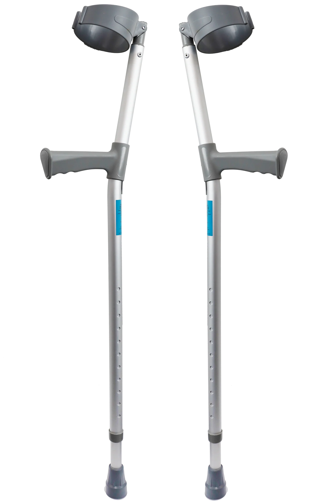

Details about my Meniscus Tear injury.
A meniscus tear is an injury caused by forcefully twisting or rotating your knee.
A lot of rehab and physio is needed to recover from this injury, but I was fortunate enough to have surgery on my knee to speed up my recovery.
There are many surgery procedures for meniscus tears, but I chose the most reliable procedure, a meniscus repair.
However, instead of stitching the meniscus back together, I had it stapled together as it would recover faster.
After a bit over two weeks, it was taken out and I needed crutches to move around.

Crutches must be used during the recovery process.
They will help relieve pressure from your knee.
They will also help promote healing.
Physical therapy is also a crucial part of recovery.
The treatment I used when going to physical therapy was cold therapy.
Cold therapy is the use of low temperature in therapy.
It is often used for injuries around the knee and ankle.
Cold therapy can reduce the swelling around the knee and help reduce pain.
Cold therapy helped me recover much faster than expected,
and also gave me more mobility as the numbness from the therapy helped me gain control faster.